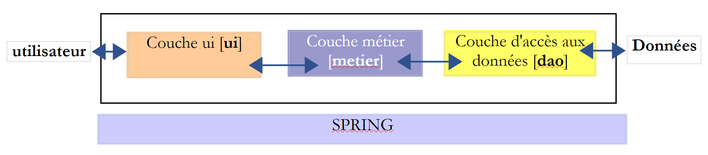

4. [TD]: Arquiteturas em camadas
Palavras-chave: arquitetura multicamadas, Spring, injeção de dependências.
4.1. Introduction
Recorde-se o que foi feito:
- na parte 1 do exercício ELECTIONS não foi utilizada nenhuma classe. Construímos uma solução tal como a teríamos construído na linguagem C.
- Na parte 2 do exercício, foram introduzidas duas classes:
- [ListeElectorale], que representa os atributos (id, nome, votos, lugares, eliminado) de uma lista de candidatos
- [ElectionsException], uma classe de exceções não controladas. Este tipo de exceção é utilizado sempre que ocorre um erro fatal na aplicação das eleições. Trata-se de uma exceção não controlada, c.a.d, pelo que o programador não é obrigado a tratá-la com um try-catch.
O cálculo do resultado das eleições tem sido, até agora, confiado a um método [main] de uma classe [MainElections]
A solução anterior inclui três fases clássicas:
- a aquisição dos dados, linhas 17-18
- o cálculo da solução, linhas 19-20
- a visualização e/ou o armazenamento dos resultados, linhas 21-22
Apenas a fase 2 é verdadeiramente constante. A fase 1 pode variar: os dados podem provir do teclado, como nos exemplos analisados, de um ficheiro de texto, de uma interface gráfica, de uma base de dados, da rede, etc. Da mesma forma, existem múltiplas formas de apresentar os resultados na fase 3: exibi-los no ecrã, como foi feito nos exemplos analisados, guardá-los num ficheiro, numa base de dados, enviá-los para a rede, etc.
De forma mais geral, uma aplicação pode frequentemente ser modelada em três camadas, cada uma com uma função bem definida:
 |
Esta arquitetura é também designada por «arquitetura de três camadas», tradução da expressão inglesa «three-tier architecture». O termo «três camadas» refere-se normalmente a uma arquitetura em que cada camada se encontra numa máquina diferente. Quando as camadas se encontram na mesma máquina, a arquitetura passa a ser uma «arquitetura de três camadas».
- A camada [metier] é aquela que contém as regras de negócio da aplicação. No caso da nossa aplicação eleitoral, trata-se das regras que permitem calcular os lugares obtidos pelas diferentes listas, uma vez conhecidos os votos obtidos por cada uma delas. Esta camada necessita de dados para funcionar. Por exemplo, na aplicação eleitoral:
- as listas, cada uma com o seu nome e o seu número de votos
- o número de lugares a preencher
- o limiar eleitoral abaixo do qual uma lista é eliminada
No esquema acima, os dados podem provir de dois locais:
- da camada de acesso aos dados ou [dao] (DAO = Data Access Object) para os dados já registados em ficheiros ou bases de dados. Este poderia ser o caso, aqui, dos nomes das listas, do número de lugares a preencher e do limiar eleitoral. De facto, estas informações são conhecidas antes da própria eleição.
- a camada de interface com o utilizador ou [ui] (UI = Interface do Utilizador) para os dados introduzidos pelo utilizador ou apresentados ao utilizador. Este poderia ser o caso, aqui, dos votos das listas, que só são conhecidos no último momento, bem como da exibição dos resultados da eleição.
- De um modo geral, a camada [dao] encarrega-se do acesso a dados persistentes (ficheiros, bases de dados) ou não persistentes (rede, sensores, ...).
- A camada [ui], por sua vez, encarrega-se das interações com o utilizador, caso exista algum.
- As três camadas tornam-se independentes graças à utilização de interfaces Java.
- Para integrar estas camadas na aplicação, existem vários métodos. Iremos utilizar uma ferramenta chamada «Spring». No esquema, esta é transversal às outras camadas.
Vamos retomar a aplicação [Elections] desenvolvida anteriormente para lhe conferir uma arquitetura de três camadas. Para tal, iremos analisar as camadas [ui, metier, dao] uma a uma, começando pela camada [dao], que se ocupa dos dados persistentes.
Antes disso, temos de definir as interfaces das diferentes camadas da aplicação [Elections].
4.2. As interfaces da aplicação [Elections]
Recorde-se que uma interface define um conjunto de assinaturas de métodos. As classes que implementam a interface dão conteúdo a esses métodos.
Voltemos à arquitetura de 3 camadas da nossa aplicação:
|
Neste tipo de arquitetura, é frequentemente o utilizador que toma a iniciativa. Este efetua um pedido em [1] e recebe uma resposta em [8]. A isto chama-se o ciclo pedido-resposta. Tomemos o exemplo do cálculo dos lugares obtidos na noite das eleições. Este processo irá requerer várias etapas:
- a camada [ui] terá de solicitar ao utilizador o número de votos obtidos por cada uma das listas. Para tal, terá de apresentar ao utilizador os nomes das listas em competição. O utilizador terá então apenas de indicar o número de votos ao lado de cada lista e, em seguida, solicitar o cálculo dos lugares.
- A camada [ui] não dispõe dos nomes das listas. Estes estão registados na fonte de dados à direita do esquema. A camada utilizará o caminho [2, 3, 4, 5, 6, 7] para os obter. A operação [2] corresponde ao pedido das listas, enquanto a operação [7] corresponde à resposta a esse pedido. Feito isto, pode apresentá-las ao utilizador através da operação [8].
- O utilizador irá transmitir à camada [ui] o número de votos obtidos por cada uma das listas. Trata-se da operação [1] acima referida. Durante esta etapa, o utilizador interage apenas com a camada [ui]. É esta camada que irá, nomeadamente, verificar a validade dos dados introduzidos. Feito isto, o utilizador solicitará a lista dos lugares obtidos por cada uma das listas.
- A camada [ui] solicitará à camada de negócio que efetue o cálculo dos lugares. Para tal, transmitirá a esta os dados que recebeu do utilizador. Trata-se da operação [2].
- A camada [metier] necessita de determinadas informações para realizar o seu trabalho. Já dispõe das listas provenientes da operação (b). Precisa também do número de lugares a preencher, bem como do valor do limiar eleitoral. Irá solicitar essas informações à camada [dao] através do caminho [3, 4, 5, 6]. [3] é o pedido inicial e [6] a resposta a esse pedido.
- Tendo todos os dados de que necessitava, a camada [metier] calcula os lugares obtidos por cada uma das listas.
- A camada [metier] pode agora responder à solicitação da camada [ui] efetuada em (d). Este é o caminho [7].
- A camada [ui] irá formatar estes resultados para os apresentar ao utilizador de forma adequada e, em seguida, exibi-los. Este é o caminho [8].
- É possível imaginar que estes resultados devam ser guardados num ficheiro ou numa base de dados. Isto pode ser feito de forma automática. Neste caso, após a operação (f), a camada [metier] irá solicitar à camada [dao] que registe os resultados. Este será o caminho [3, 4, 5, 6]. Isto também pode ser feito apenas a pedido do utilizador. Será o caminho [1-8] que será utilizado pelo ciclo pedido-resposta.
Vê-se nesta descrição que uma camada é levada a utilizar os recursos da camada que se encontra à sua direita, nunca da que se encontra à sua esquerda. Consideremos duas camadas contíguas:
 |
A camada [A] faz pedidos à camada [B]. Nos casos mais simples, uma camada é implementada por uma única classe. Uma aplicação evolui ao longo do tempo. Assim, a camada [B] pode ter classes de implementação diferentes, como [B1, B2, ...]. Se a camada [B] for a camada [dao], esta pode ter uma primeira implementação, [B1], que obtém dados de um ficheiro. Alguns anos mais tarde, pode ser necessário colocar os dados numa base de dados. Nesse caso, será criada uma segunda classe de implementação, [B2]. Se, na aplicação inicial, a camada [A] trabalhasse diretamente com a classe [B1], seríamos obrigados a reescrever parcialmente o código da camada [A]. Suponhamos, por exemplo, que tenhamos escrito na camada [A] algo como o seguinte:
- linha 1: é criada uma instância da classe [B1]
- linha 3: são solicitados dados a essa instância
Se assumirmos que a nova classe de implementação [B2] utiliza métodos com a mesma assinatura que os da classe [B1], será necessário alterar todos os [B1] para [B2]. Este é o caso mais favorável e bastante improvável, caso não se tenha prestado atenção a estas assinaturas de métodos. Na prática, é frequente que as classes [B1] e [B2] não tenham as mesmas assinaturas de métodos e que, por isso, uma boa parte da camada [A] tenha de ser totalmente reescrita.
É possível melhorar a situação se se introduzir uma interface entre as camadas [A] e [B]. Isto significa que se fixam numa interface as assinaturas dos métodos apresentados pela camada [B] à camada [A]. O esquema anterior passa então a ser o seguinte:
 |
A camada [A] já não se dirige diretamente à camada [B], mas sim à sua interface [IB]. Assim, no código da camada [A], a classe de implementação [Bi] da camada [B] aparece apenas uma vez, no momento da implementação da interface [IB]. Assim, é a interface [IB] e não a sua classe de implementação que é utilizada no código. O código anterior passa a ser o seguinte:
- linha 1: é criada uma instância [ib] que implementa a interface [IB], através da instanciação da classe [B1]
- linha 3: são solicitados dados à instância [ib]
A partir de agora, se substituirmos a implementação [B1] da camada [B] por uma implementação [B2], e se ambas as implementações respeitarem a mesma interface [IB], então apenas a linha 1 da camada [A] deve ser alterada e nenhuma outra. Trata-se de uma grande vantagem que, por si só, justifica a utilização sistemática de interfaces entre duas camadas.
É possível ir ainda mais longe e tornar a camada [A] totalmente independente da camada [B]. No código acima, a linha 1 coloca um problema porque faz referência direta à classe [B1]. O ideal seria que a camada [A] pudesse dispor de uma implementação da interface [IB] sem ter de nomear uma classe. Isso seria coerente com o nosso esquema acima. Vemos que a camada [A] se dirige à interface [IB] e não se percebe por que razão precisaria de saber o nome da classe que implementa essa interface. Este detalhe não é útil para a camada [A].
O framework Spring (http://www.springframework.org) permite obter este resultado. A arquitetura anterior evolui da seguinte forma:
 |
A camada transversal [Spring] permitirá que uma camada obtenha, por meio da configuração, uma referência à camada situada à sua direita, sem ter de conhecer o nome da classe de implementação dessa camada. Esse nome constará nos ficheiros de configuração e não no código Java. O código Java da camada [A] assume, então, a seguinte forma:
- linha 1: uma instância [ib] que implementa a interface [IB] da camada [B]. Esta instância é criada pelo Spring com base em informações encontradas num ficheiro de configuração. O Spring encarregar-se-á de criar:
- a instância [b] que implementa a camada [B]
- a instância [a] que implementa a camada [A]. Esta instância será inicializada. O campo [ib] acima receberá como valor a referência [b] do objeto que implementa a camada [B]
- linha 3: são solicitados dados à instância [ib]
Vemos agora que a classe de implementação [B1] da camada B não aparece em nenhuma parte do código da camada [A]. Quando a implementação [B1] for substituída por uma nova implementação [B2], nada mudará no código da classe [A]. Bastará alterar os ficheiros de configuração do Spring para instanciar [B2] em vez de [B1].
A combinação do Spring com as interfaces Java traz uma melhoria decisiva à manutenção das aplicações, tornando as suas camadas independentes umas das outras. É esta solução que iremos utilizar para a aplicação [Elections].
Voltemos à arquitetura de três camadas da nossa aplicação:
 |
Em casos simples, podemos partir da camada [metier] para descobrir as interfaces da aplicação. Para funcionar, esta necessita de dados:
- já disponíveis em ficheiros, bases de dados ou através da rede. Estes são fornecidos pela camada [dao].
- ainda não disponíveis. Nesse caso, são fornecidos pela camada [ui], que os obtém junto do utilizador da aplicação.
Que interface deve a camada [dao] disponibilizar à camada [metier]? Quais são as interações possíveis entre estas duas camadas? A camada [dao] deve fornecer os seguintes dados à camada [metier]:
- o número de lugares a preencher
- o valor do limiar eleitoral abaixo do qual uma lista é eliminada
- os nomes das listas
Estas informações são, de facto, conhecidas antes da eleição e podem, portanto, ser armazenadas. No sentido [metier] -> [dao], a camada [metier] pode solicitar à camada [dao] que registe o resultado das eleições, nomeadamente os lugares obtidos pelas diferentes listas.
Com estas informações, seria possível tentar uma primeira definição da interface da camada [dao]:
public interface IElectionsDao {
public double getSeuilElectoral();
public int getNbSiegesAPourvoir();
public ListeElectorale[] getListesElectorales();
public void setListesElectorales(ListeElectorale[] listesElectorales);
}
- linha 1: a interface chama-se [IElectionsDao]. Define quatro métodos:
- três métodos para ler dados provenientes da fonte de dados: [getSeuilElectoral, getNbSiegesAPourvoir, getListesElectorales]. Estes três métodos permitirão à camada [metier] obter os dados que caracterizam a eleição em curso.
- um método para gravar dados na fonte de dados: [setListesElectorales]. Este método permitirá que a camada [metier] solicite o registo dos resultados que tiver calculado.
Voltemos à arquitetura de três camadas da nossa aplicação:
|
Que interface deve a camada [metier] apresentar à camada [ui]? Analisemos as interações possíveis entre estas duas camadas.
- A camada [ui] terá como função solicitar ao utilizador os votos para as diferentes listas em competição. Para tal, tem de conhecer o número de listas. Pode solicitar essa informação à camada [metier], que, por sua vez, pode solicitar a tabela das listas em competição à camada [dao]. Se a camada [metier] tiver essa tabela, mais vale transferi-la para a camada [ui]. Esta disporá assim dos nomes das listas e poderá refinar as suas mensagens ao utilizador, solicitando, por exemplo, «Número de votos da lista A».
- Quando a camada [ui] tiver obtido os votos de todas as listas, solicitará o cálculo dos lugares à camada [metier]. Esta poderá efetuar esse cálculo e devolver o resultado à camada [ui].
- A camada [ui] poderá então apresentar esses resultados ao utilizador. Este poderá também solicitar o seu registo.
- A camada [ui] poderá, além disso, querer apresentar informações complementares ao utilizador, tais como o limiar eleitoral ou o número de lugares a preencher.
Com estas informações, seria possível tentar uma primeira definição da interface da camada [metier] :
public interface IElectionsMetier {
public ListeElectorale[] getListesElectorales();
public int getNbSiegesAPourvoir();
public double getSeuilElectoral();
public void recordResultats(ListeElectorale[] listesElectorales);
public ListeElectorale[] calculerSieges(ListeElectorale[] listesElectorales);
}
- linha 1: a interface chama-se [IElectionsMetier]. Define os seguintes métodos:
- linha 3: um método [getListesElectorales] que permitirá à camada [ui] obter a tabela das listas em concorrência;
- linha 5: o método [getNbSiegesAPourvoir] permite obter o número de lugares a preencher;
- linha 7: o método [getSeuilElectoral] permite obter o limiar eleitoral;
- linha 11: um método [calculerSieges] (linha 36) que permitirá à camada [ui] solicitar o cálculo dos lugares assim que os números de votos das diferentes listas forem conhecidos. O parâmetro é a tabela das listas em competição, sem os respetivos lugares e sem o valor booleano «eliminado». O resultado devolvido é essa mesma tabela, desta vez com os campos [sièges, elimine] inicializados;
- linha 9: um método [recordResultats] que permitirá à camada [ui] solicitar o registo dos resultados.
Nota: devido à sua posição, a camada [métier] retoma alguns dos métodos da camada [DAO] para os disponibilizar à camada [UI]. Devido a esta redundância, pode surgir a tentação de agrupar tudo numa única camada que englobasse tanto a lógica de negócio como o acesso aos dados. Esta camada única é por vezes designada por «modelo», o M da sigla MVC (Modelo - Vista - Controlador). MVC é um padrão de conceção (design pattern) comum nas aplicações web.
Analisemos a assinatura do método [calculerSieges]:
public ListeElectorale[] calculerSieges(ListeElectorale[] listesElectorales);
Foi referido anteriormente: «O parâmetro é o tabuleiro das listas concorrentes, sem os seus lugares e sem o valor booleano eliminado. O resultado é esse mesmo tabuleiro, mas desta vez com os campos [sièges, elimine]». A assinatura do método poderia também ser a seguinte:
public void calculerSieges(ListeElectorale[] listesElectorales);
O parâmetro [listesElectorales] é uma referência a um objeto, neste caso uma matriz. Cada elemento é, por sua vez, uma referência a um objeto, neste caso do tipo [ListeElectorale]. O método [calculerSieges] irá alterar os campos [sieges, elimine] de cada um desses objetos. O método chamador possui um ponteiro [listesElectorales] que:
- antes da chamada, é a referência a uma matriz de objetos [ListeElectorale] cujos campos [sieges, elimine] não estão inicializados;
- após a chamada, é a referência (a mesma) a um tabuleiro de objetos [ListeElectorale] cujos campos [sieges, elimine] estão inicializados;
Então, por que utilizar a assinatura:
public ListeElectorale[] calculerSieges(ListeElectorale[] listesElectorales);
Ao escrever uma interface, é importante lembrar que esta pode ser utilizada em dois contextos diferentes: local e distant. No contexto local, o método chamador e o método chamado são executados na mesma JVM (Máquina Virtual Java):
|
Se a camada [ui] chamar o método calculerSieges da camada [DAO], ela tem, de facto, uma referência ao parâmetro [ListeElectorale[] listesElectorales], que passa ao método.
No contexto distant, o método chamador e o método chamado são executados em JVM diferentes:
 |
No exemplo acima, a camada [ui] é executada na JVM 1 e a camada [métier] na JVM 2, em duas máquinas diferentes. As duas camadas não comunicam diretamente entre si. Entre elas intercala-se uma camada a que chamaremos camada de comunicação [1]. Esta é composta por uma camada de emissão [2] e por uma camada de receção [3]. Normalmente, o programador não precisa de escrever estas camadas de comunicação. São geradas automaticamente por ferramentas de software. A camada [metier] é escrita como se fosse executada na mesma JVM que a camada [DAO]. Não há, portanto, qualquer alteração no código.
O mecanismo de comunicação entre a camada [ui] e a camada [métier] é o seguinte:
- a camada [ui] invoca o método calculerSieges da camada [métier], passando-lhe o parâmetro [ListeElectorale[] listesElectorales1];
- este parâmetro é, na verdade, passado para a camada de emissão [2]. Esta irá transmitir na rede o valor do parâmetro listesElectorales1 e não a sua referência. A forma exata deste valor depende do protocolo de comunicação utilizado;
- a camada de receção [3] irá recuperar esse valor e, a partir dele, reconstruir um objeto [ListeElectorale[] listesElectorales2] que é uma réplica do parâmetro inicial enviado pela camada [metier]. Temos agora dois objetos idênticos (em termos de conteúdo) em duas camadas JVM diferentes: listesElectorales1 e listesElectorales2.
- A camada de receção irá passar o objeto listesElectorales2 para o método calculerSieges da camada [métier], que irá armazená-lo na base de dados. Após esta operação, a referência listesElectorales2 aponta para um tabuleiro de objetos [ListeElectorale] cujos campos [sieges, elimine] estão inicializados. . Não é esse o caso do objeto listesElectorales1, ao qual a camada [ui] faz referência. Se quisermos que a camada [ui] tenha uma referência ao objeto listesElectorales2, é necessário enviar-lhe esse objeto. Por isso, somos levados a utilizar a seguinte assinatura para o método [calculerSieges]:
public ListeElectorale[] calculerSieges(ListeElectorale[] listesElectorales);
- Com esta assinatura, o método calculerSieges irá devolver como resultado a referência listesElectorales2. Este resultado é devolvido à camada de receção [3], que tinha chamado a camada [métier]. Esta, por sua vez, irá devolver o valor (e não a referência) de listesElectorales2 à camada de emissão [2];
- a camada de emissão [2] irá recuperar esse valor e, a partir dele, reconstruir um objeto [ListeElectorale[] listesElectorales3] a imagem do resultado gerado pelo método calculerSieges da camada [métier].
- O objeto [ListeElectorale[] listesElectorales3] é entregue ao método da camada [ui], cuja chamada ao método calculerSieges da camada [DAO] tinha iniciado todo este mecanismo;
Neste processo, objetos do tipo [ListeElectorale] transitam entre as camadas [2] e [3]:
- quando a camada [2] transmite o valor de um objeto [ListeElectorale] à camada [3], diz-se que o objeto é serializado. A forma exata desta serialização depende do protocolo de comunicação utilizado;
- quando a camada [3] recupera o valor de um objeto [ListeElectorale] para criar novamente um objeto [ListeElectorale], diz-se que o objeto é deserializado;
Para que um objeto possa ser submetido a esta serialização/desserialização, alguns protocolos exigem que o objeto implemente a interface [Serializable]. Esta interface é apenas um marcador. Não há métodos a implementar. Assim, a classe [ListeElectorale] passará a ser declarada da seguinte forma:
public abstract class ListeElectorale implements Serializable {
private static final long serialVersionUID = 1L;
- O campo da linha 2 é obrigatório. Pode ser mantido tal como está e utilizado para qualquer classe do tipo [Serializable].
4.3. A classe de exceção
Voltemos à interface da camada [DAO]:
 |
public interface IElectionsDao {
public double getSeuilElectoral();
public int getNbSiegesAPourvoir();
public ListeElectorale[] getListesElectorales();
public void setListesElectorales(ListeElectorale[] listesElectorales);
}
Estes métodos trabalham com uma base de dados e podem deparar-se com vários erros, por exemplo, um SGBD indisponível. Ao escrever um método, é necessário prever sempre os casos de erro. Estes são normalmente sinalizados por uma exceção. Já nos deparámos com a classe [ElectionsException] no parágrafo 3.3. Vamos continuar a utilizá-la, mas enriquecendo-a da seguinte forma:
package ...;
import java.io.Serializable;
import java.util.ArrayList;
import java.util.List;
// classe de exceção para a aplicação «Eleições»
// a exceção é não controlada
public class ElectionsException extends RuntimeException implements Serializable {
// série ID
private static final long serialVersionUID = 1L;
// campos locais
private int code;
private List<String> erreurs;
// construtores
public ElectionsException() {
super();
}
public ElectionsException(int code, Throwable e) {
// pai
super(e);
// local
this.code = code;
this.erreurs = getErreursForException(e);
}
public ElectionsException(int code, String message, Throwable e) {
// pai
super(message,e);
// local
this.code = code;
this.erreurs = getErreursForException(e);
}
public ElectionsException(int code, String message) {
// pai
super(message);
// local
this.code = code;
List<String> erreurs = new ArrayList<>();
erreurs.add(message);
this.erreurs = erreurs;
}
public ElectionsException(int code, List<String> erreurs) {
// pai
super();
// local
this.code = code;
this.erreurs = erreurs;
}
// lista de mensagens de erro de uma exceção
private List<String> getErreursForException(Throwable th) {
// recupera-se a lista de mensagens de erro da exceção
Throwable cause = th;
List<String> erreurs = new ArrayList<>();
while (cause != null) {
// recupera-se a mensagem apenas se esta for !=null e não estiver vazia
String message = cause.getMessage();
if (message != null) {
message = message.trim();
if (message.length() != 0) {
erreurs.add(message);
}
}
// causa seguinte
cause = cause.getCause();
}
return erreurs;
}
// getters e setters
...
}
- linhas 16-17: o tipo [ElectionsException] encapsula:
- um código de erro, linha 16;
- uma lista de mensagens de erro, linha 17;
A classe suporta cinco construtores:
- linha 20: ElectionsException()
- linha 24: ElectionsException(int code, Throwable e): o segundo parâmetro é do tipo [Throwable], que é a classe pai da classe [Exception]. Este construtor permite encapsular a exceção e com um código de erro. O tipo [Throwable] (e, portanto, o tipo Exception) permite encapsular uma ou mais exceções. A ideia é:
- interceptar (catch) uma exceção que ocorra;
- enriquecê-la com uma mensagem, encapsulando-a numa nova exceção;
- lançar novamente a nova exceção;
O encapsulamento ocorre na linha 34 através da instrução [super(message,e)]. Este processo de encapsulamento pode ser repetido e a exceção inicial pode ser enriquecida com diferentes mensagens. Diz-se então que se tem uma pilha de exceções. O método [private List<String> getErreursForException(Throwable th)] permite obter as diferentes mensagens associadas às exceções encapsuladas:
- (continuação)
- (continuação)
- a exceção encapsulada é obtida através do método Throwable [Throwable].getCause();
- a mensagem associada a uma exceção é obtida através do método String [Throwable].getMessage();
- (continuação)
- linhas 28-29: constroem-se os campos [code, erreurs];
- linha 32: public ElectionsException(int code, String message, Throwable e): este construtor é análogo ao anterior, com a diferença de que enriquece a exceção que vai encapsular com um código e uma mensagem;
- linha 40: public ElectionsException(int código, String mensagem): construtor sem encapsulamento de exceção;
- linha 50: public ElectionsException(int code, List<String> erros): construtor sem encapsulamento de exceção nem mensagem;
A classe [ElectionsException] poderá ser utilizada da seguinte forma:
onde a mensagem poderá ou não estar presente. Uma vez criada, a exceção [ElectionsException] não se destina a encapsular novas exceções. No exemplo acima, ela encapsula a exceção e1 e as exceções que a e1 encapsula. A partir daí, não há mais novos encapsulamentos.
A classe [ElectionsException] também poderá ser utilizada da seguinte forma: